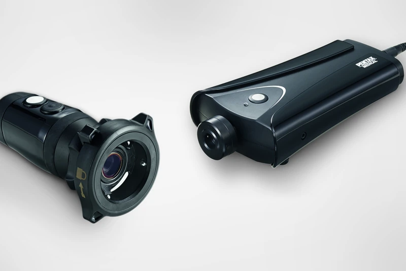

후보 상세 04 / 05 · 2026. 10. 1. 조사 기준
2순위 후보 1
PENTAX FI-7RBS(일본)
최대 외경 3.05 mm 공개. 접안식에서 디지털 화면으로 전환하려면 USB 카메라킷과 PC가 필요한 구성.
- 삽입관 외경
- 2.4 mm
- 최대 외경
- 3.05 mm
- 삽입 길이
- 60 cm
- 흡인
- 없음
01구매 판단
02사진 자료



사진을 누르면 원본 크기로 열림. 제조사·유통사 실제 자료 사용; 정확 모델이 아닌 계열 사진은 캡션에 표시.
03공개 규격
04ANKOR 33Fr 적용
05모델·판본 구분
06국내 근거·연락처
- 국내 주체: 펜탁스메디칼싱가포르유한회사 한국 영업소.
- 품목: FI-7 모델 검색에서 수인15-1187 / 수인11-1351 정상 기록 확인.[5]
- 전화: 02-6925-0670.
- 이메일: inquiryKOREA@pentaxmedical.com.
- 연락처: PENTAX Medical Korea Branch.[36]
07참고문헌
번호는 기본 보고서와 동일. 문서 제목을 누르면 원문으로 이동.
- Insung Medical / Flexicare. VentiBronc Anchor Endobronchial Tube — Instructions for Use, USA. 07/2024.
- 식품의약품안전처. 의료기기 공개 품목·모델 검색.
- PENTAX Medical. Fiber Intubation Endoscope FI-7RBS.
- PMDA. ペンタックス挿管用ファイバースコープ 添付文書. 第14版, 2023-12.
- PENTAX Medical. USB Camera Kit. 08/2014.
- PENTAX Medical. Contact Us — Korea Branch.